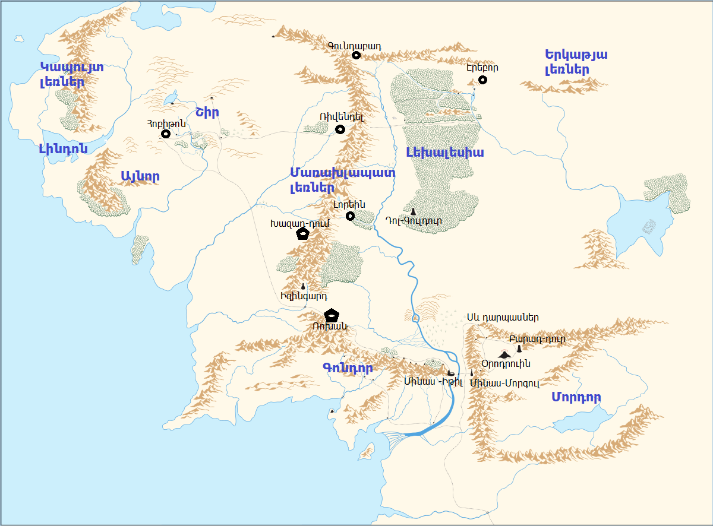
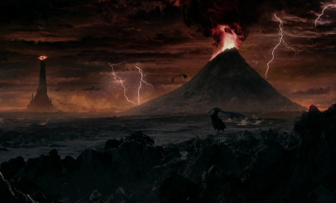
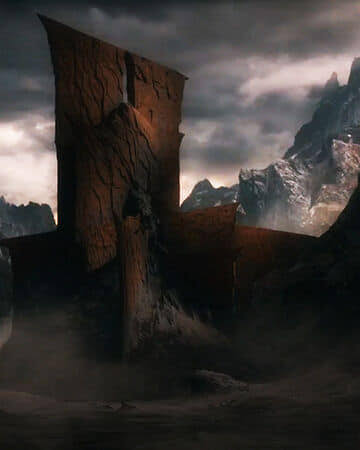
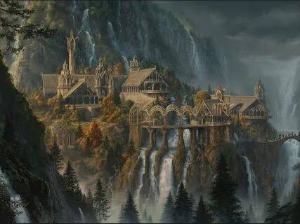
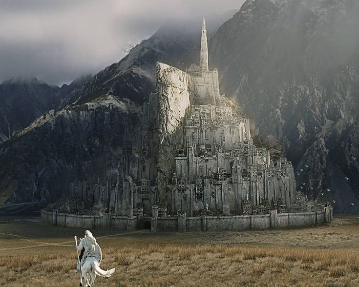
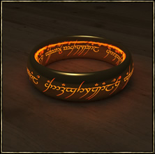
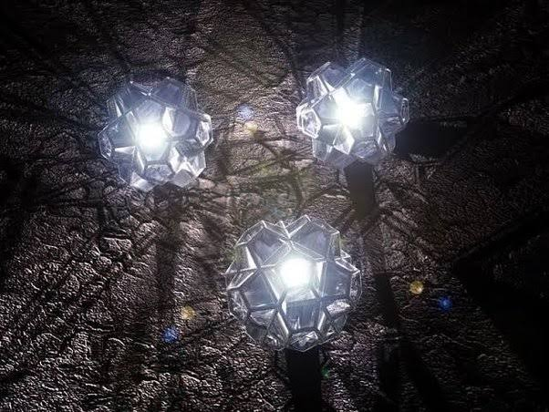
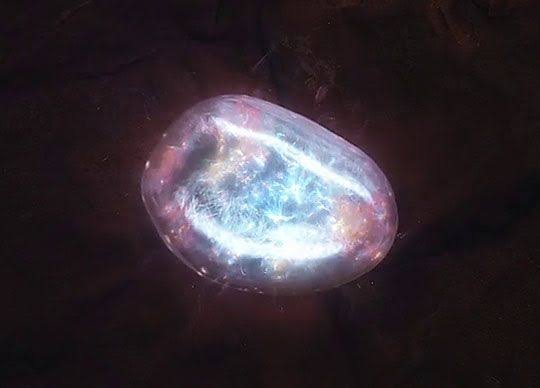

.1. Քարտեզ
Միջերկիրը երկրերդ դարաշրջանում
.2. Լոկացիաներ
Գոնդոր Թոլքիենի լեգենդարիումում ՄիջԵրկրում Նումենորացիների հարավային թագավորությունը։ Հիմնադրվել է Էլենդիլի կողմից Նումենորի կործանումից հետո երկրորդ դարաշրջանի 3320 թվականին Մորդորից արևմուտք գտնվող Բելֆալաս ծոցի ափին։ Մայրաքաղաք է ճանաչվում Օսգիլիաթ քաղաքը բայց հետագայում երրորդ դարաշրջանի երկրորդ կեսին տեղափոխվում է Մինաս-իթիլ։ Հետագայում Սաուրոնի պարտությունից հետո Արագորնը Գոնդորը և Արնորը(Այնոր) միավորում է մոկ թագավորության մեջ։

Մորդոր Թոլքիենի լեգենդարիումում Միջերկրի շրջան հարավ-արևելքում, Անդուինից արևելք, Խավարի Տիրակալ Սաուրոնի թագավորությունը: Ֆրոդոն և Սեմը գնում էին այնտեղ՝ ոչնչացնելու Ուժի համաիշխանության մատանին: Մորդորը եզակի է երեք հսկայական լեռնաշղթաների շնորհիվ, որոնք շրջապատում են այն հյուսիսից, արևմուտքից և հարավից և պաշտպանում այն անսպասելի հարձակումներից:
Հոբիթոն Թոլքիենի լեգենդարիումում գյուղ է Վոդյա գետի երկայնքով Բայվոթերից դեպի արևմուտք: Այն գտնվում է ՄիջԵրկրի հյուսիս-արևմտյան մասում և բնակեցված է բացառապես հոբիթներով։ Այստեղ ապրում էին Բիլբո Բեգինսը, Ֆրոդո Բեգինսը, և այնտեղից էր սկսվում և ավարտվում «Հոբիթը», և «Մատանիների տիրակալը» գրքերի իրադարձությունները:
Գունդաբադ ՄիջԵրկրի հյուսիսի ամենամեծ լեռներից մեկը, որը գտնվում է Մառախլապատ լեռների մեջ Գորշ լեռների հետ իրենց միացման վայրում: Դա այն վայրն էր, որտեղ հայտնվեցին առաջին դվորֆների ցեղերը։ Այստեղ երկրորդ դարաշրջանում Դուրին երկարամորուքը հիմնադրում է դվորֆների առաջին քաղաքը։ Երրորդ դարաշրջանում այն գրավում են օրքերը՝ դարձնելով իրենց մայրաքաղաքը։
Էրեբոր կամ (միայնակ լեռ) ինչպես լեռան, այնպես էլ դրա տակ գտնվող դվորֆների թագավորության անվանում։ Գտնվում է ՄիջԵրկրի հյուսիսարևելյան մասում, Գորշ լեռների արևելյան ծայրի հարավում և Երկաթյա լեռների արևմուտքում։ Սմաուգը իմանալով այնտողի հարստությունների մասին հարձագվում է և վթարում բնակիչներին։ Հետագայում Թորինի և նրա արշավախմբի անդամների կողմից ազատագրվում է Միշապից։
Ռիվենդել Թոլքիենի լեգենդարիումում Էլրոնդի թաքստոցը, որը նա ստեղծել է Էրիադորում 1697թ-ին Սաուրոնից պաշտպանվելու համար: Այս վայրը գտնվում էր Մառախլապատ լեռների արևմտյան ստորոտին և մնաց թաքնված Էլրոնդի մատանու շնորհիվ, մինչև Մատանու պատերազմի ավարտը։ Համաիշխանության մատանու ոչնչացումից հետո Էլրոնդի մատանու ուժը վերանում է, և նա նավարկում է Վալինոր, բայց Ռիվենդելը որոշ ժամանակ մնում է իր որդիների՝ Էլադանի և Էլրոհիրի իշխանության տակ:
Խազադ-դում կամ (Մորիա) հսկայական ստորգետնյա քաղաք-պետություն ՄիջԵրկրի Մառախլապատ լեռներում: Նրա թունելների հսկայական ցանցը ներառում էր խորը հանքեր և հսկայական սրահներ, որոնք միացված էին անցուղիներով: Շատ հազարավոր տարիներ Մորիայի բնակիչները Դուրինի դինաստիայի Նաուգրիմ դվորֆներն էին: Մորիայի հիմնական հարստությունը ոչ թե երկաթի, արծաթի կամ ոսկու մեջ էր, այլ թանկարժեք մետաղի` միտրիլի մեջ, որը հայտնաբերվել է միայն այստեղ: Երրորդ դարաշրջանի 1980 թվականին դվորֆները սպառելով ավելի հասանելի միտրիլային աղբյուրները, գնացին դեպի ամենախոր հորիզոնները և ակամա արթնացրին մի բալրոգի, որին նրանք անվանեցին Դուրինի Անեղք։
Մինաս-Իթիլ կամ (Մինաս-Թիրիթ) Թոլքիենի լեգենդարիումում ամրոցն: Երրորդ դարաշրջանի երկրորդ կեսին Գոնդորի մայրաքաղաքը։
.3. Արտեֆակտներ
Անդուրիլ կամ (Նարսիլ) Էլենդիլ թագավորի հայտնի սուրը. Երբ վերջինս մահացավ, սուրը կոտրվեց, իսկ պատյանում նրա բեկորները փոխանցվեցին հորից որդուն Իսիլդուրին։ Վերջինս սրի բեկորով կտրում է Սաուրոնի այն մատը որի վրա էր Համաիշխանության մատանին։ Իսիլդուրի մահից հետո այն պահվել է Ռիվենդելում մինչև որ այն նորից հալեցվեց և ձուլվեց Արագորնի համար։
Համաիշխանության մատանի կամ (միածին Մատանի) Թոլքիենի լեգենդարիումում հիմնական մատանին, որը կառավարում և ղեկավարում է ուժի մյուս մատանիները։ Ստեղծվել է Սաուրոնի կողմից օրոդրուին լեռան լավաների մեջ։ Կործանվել է Բիլբո Բեգինսի կողմից։

Կախարդական իշխանության մատանիներ թույլ են տալիս մատանիները կրողներին դառնալ ավելի ուժեղ, իմաստուն և հզոր։ Մատանիները 20-ն են։ 3 էլֆերի համար, 7 դվորֆների համար, 9 մարդկանց համար։ Իսկ 1 միածին Համաիշխանության մատանու շնորհիվ Սաուրոնը կարողանում էր իրեն ստրկացնել բոլոր մատանիները կրողներին բացի էլֆական 3 մատանիները կրողներից, քանզի դրանք ստեղծվել էին առանց Սաուրոնի։
Սիլմարիլներ Թոլքիենի լեգենդարիումում Ֆեանորի կողմիծ ստեղծված թանկարժեք գոհարներ որոնց մեջ էր պարուրված երկու ծառերի լույսերը։ Հետագայում գողացվում են Մելկորի կողմից և դրվում նրա թագի մեջ։ Մելկորի մահից հետո դրանք կորում են։
Պալանտիր Թոլքիենի լեգենդարիումում Ֆեանորի կողմից Ամանում ստեղծված 7 քարեր։ Այս քարերի օգնությամբ կարելի էր տեսնել, թե ինչ է կատարվում ներկայումս մեկ այլ վայրում կամ տեղի է ունեցել անցյալում, ինչպես նաև հնարավոր է եղել զրուցել հեռու գտնվող զրուցակցի հետ (եթե նա ևս ունի պալանտիր)։ Պալանտիրներին չի կարելի ստիպել ցույց տալ մի բան, որը չկա (նույնիսկ Սաուրոնը չկարողացավ դա անել), բայց հնարավոր է դիտողին ներշնչել կեղծ տեսիլքներ։
Արկինստոուն Էրեբորի խորքերում դվորֆների կողմից հայտնաբերված լեգենդար քար Էրեբորի գանձարանի ամենամեծ արժեքը, որը կոչվում է նաև «Լեռան սիրտ» և «Ինքնիշխան քար»: Դա երեխայի գլխի չափսով երեսպատված կլոր բյուրեղ է (նման է ադամանդի) որը ճառագում է անորոշ փայլով:
